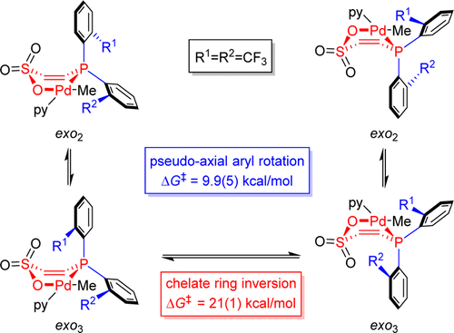
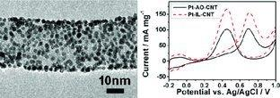

My research involves
Air / moisture sensitive organic and organometallic synthesis
Ethylene polymerization / oligomerization and ethylene / polar vinyl monomer copolymerization (NMR scale, Fisher-Potter bottle, autoclave)
Nuclear magnetic resonance (NMR) spectroscopy:
One-dimensional (1H, 13C, 19F, 31P, DEPT, variable-temperature: −120~120 °C, full lineshape analysis)
Two-dimensional (COSY, HMQC, HMBC, NOESY, HOESY, qualitative and quantitative EXSY)
GC-MS, ESI-MS, IR, UV-Vis
Polymer / oligomer characterization methods: GPC, DSC, NMR, GC-MS
Homogeneous catalysis, catalyst structure – polymer property relationships
Publication:
Ge Feng; Matthew P. Conley; Richard F. Jordan Organometallics 2014, 33, 4486-4496.
In this work, I successfully differentiated two dynamic processes in a (phosphine-sulfonate)palladium complex by delicately designed NMR experiments, particularly taking advantage of through-space 19F couplings and 1H−19F nuclear Overhauser effects.

Since July 2014, I have been invited to peer review manuscripts for Journal of Molecular Catalysis A: Chemical (Elsevier).
In Prof. Yan Li's group at Peking University:
Developed a new ionic-liquid-assisted method to prepare carbon nanotube-supported platinum nanoparticles (Pt/CNT), resulted in much more uniformly dispersed nanoparticles than conventional polyol reduction method
Increased electrocatalytic activity of Pt/CNT toward methanol oxidation by about 50%
Applied Pt/CNT as amperometric detector of H2O2 (detection limit ~10-8 mol/L)

In Prof. Anne McNeil's group at University of Michigan in 2008 summer (UM/PKU exchange program):
Mechanistic studies of the intramolecular Pd transfer in Suzuki Couplings